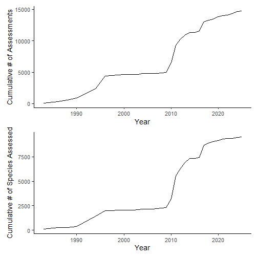
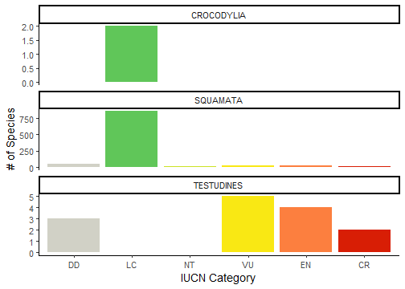
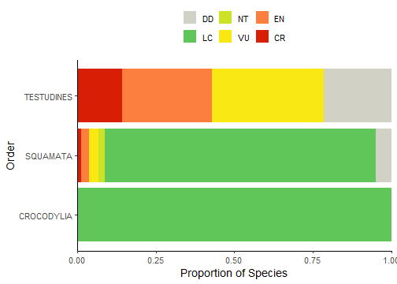
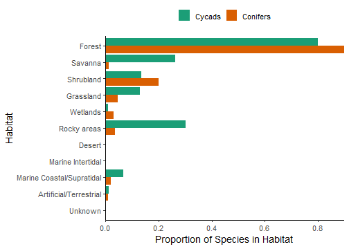

Using rredlist within a research workflow
William Gearty
2025-09-03
Source:vignettes/research_workflows.Rmd
research_workflows.RmdIntroduction
Once you have rredlist set
up, it’s very likely you’ll want to use it for some sort of research
workflow. This vignette gives examples of the kinds of data that users
may be interested in downloading from the IUCN API, and how they might
then use that data within a partial research workflow. I’ve given three
worked examples, but because the possibilities are pretty endless, I’ve
also cited some recent published works at the bottom of the vignette to
cover a wider variety of use cases.
Before we get started, we’ll just load some packages that we’ll need. We’ll use dplyr for handling and cleaning our data, and we’ll use ggplot2 and patchwork for visualizing our data.
How have mollusc assessments increased through time?
For our first research workflow, we are interested in the assessment
of molluscs through time. Specifically, we are interested in how many
cumulative assessments have been completed each year, and how many
cumulative species have then been assessed each year. First, we’ll need
to download an assessment summary for Mollusca. Note that while I’ve
used quiet = TRUE here for the purposes of the vignette,
you would likely want to skip that to get a lovely progress bar that
keeps you apprised of the download’s progress since there are quite a
few pages of assessments to download.
moll_assessments <- rl_phylum(phylum = "Mollusca", quiet = TRUE)Now that we have our assessment summary, we can summarize the data by calculating the cumulative numbers of assessments through time. This is a fairly basic dplyr pipeline that counts the number of assessments for each year, then orders those counts from oldest to most recent, then calculates the cumulative sum of the counts.
moll_counts <- moll_assessments$assessments %>%
group_by(year_published) %>%
summarize(assess_cnt = n()) %>%
ungroup() %>%
mutate(year_published = as.numeric(year_published)) %>%
arrange(year_published) %>%
mutate(assess_cum = cumsum(assess_cnt))Now that we have our cumulative sums, we can make a simple plot. We’ll save it for later to combine with our second plot.
gg1 <- ggplot(moll_counts) +
geom_line(aes(x = year_published, y = assess_cum)) +
labs(x = "Year", y = "Cumulative # of Assessments") +
theme_classic(base_size = 14)Now let’s see how many cumulative species are assessed by
year. In order to do this, we’ll first need to filter to only the first
assessment for each species using arrange() and
slice(). Then we can calculate the cumulative sum as we did
for the assessments above.
moll_sp_counts <- moll_assessments$assessments %>%
mutate(year_published = as.numeric(year_published)) %>%
group_by(sis_taxon_id) %>%
arrange(year_published) %>%
slice(1) %>%
ungroup() %>%
group_by(year_published) %>%
summarize(sp_cnt = n()) %>%
ungroup() %>%
mutate(year_published = as.numeric(year_published)) %>%
arrange(year_published) %>%
mutate(sp_cum = cumsum(sp_cnt))Now that we have our species cumulative sums, we can visualize that and combine the two plots together.
gg2 <- ggplot(moll_sp_counts) +
geom_line(aes(x = year_published, y = sp_cum)) +
labs(x = "Year", y = "Cumulative # of Species Assessed") +
theme_classic(base_size = 14)
gg1 / gg2
plot of chunk unnamed-chunk-7
Et voila! Now we have a fairly straightforward visualization of mollusc IUCN assessment through time, indicating that there were some booms and lulls over this interval. We also see one or two instances where the majority of the assessments were of previously assessed species instead of new species.
What is the conservation status of Australian reptiles?
That first workflow only used an assessment summary, but there is so much more data available via the IUCN API if we retrieve entire assessments. Of course, these assessments include the threat status of each species, so let’s start with that. In this case, we’ll assess the overall threat status of differences orders of Australian reptiles.
First, we’ll need to figure out which Australian reptiles have been
assessed. Unfortunately, we can’t do this in a single query, so we’ll
need to get the intersection of all reptiles that have been assessed and
all Australian species that have been assessed. Let’s get the Australian
species assessment summary first. Hmm…what’s the code for Australia,
again? I can’t remember, so let’s look it up using the default behavior
of rl_countries() which returns all country codes:
rl_countries()
#> $countries
#> en code
#> 1 Andorra AD
#> 2 United Arab Emirates AE
#> 3 Afghanistan AF
#> 4 Antigua and Barbuda AG
#> 5 Anguilla AI
#> 6 Albania AL
#> 7 Armenia AM
#> 8 Angola AO
#> 9 Antarctica AQ
#> 10 Argentina AR
#> 11 American Samoa AS
#> 12 Austria AT
#> 13 Australia AU
#> 14 Aruba AW
#> 15 Åland Islands AX
#> 16 Azerbaijan AZ
#> 17 Bosnia and Herzegovina BA
#> 18 Barbados BB
...Ah, “AU”, of course! Now we can get an assessment summary for all
species that occur in Australia. As opposed to the first use case above,
we only care about which species have been assessed, so we’ll only
retrieve the latest assessments using latest = TRUE.
au_assessments <- rl_countries(code = "AU", quiet = TRUE, latest = TRUE)
names(au_assessments)
#> [1] "country" "assessments" "filters"You’ll notice that the returned assessment actually contains more than just the assessment, it includes information about the query we made (“metadata”, if you will). Let’s check that it matches what we meant to search:
au_assessments$country
#> $description
#> $description$en
#> [1] "Australia"
#>
#>
#> $code
#> [1] "AU"
au_assessments$filters
#> $latest
#> [1] "TRUE"Yep, that looks good! Now let’s inspect the format of the assessment summary:
names(au_assessments$assessments)
#> [1] "year_published" "latest" "possibly_extinct" "possibly_extinct_in_the_wild"
#> [5] "sis_taxon_id" "url" "taxon_scientific_name" "red_list_category_code"
#> [9] "assessment_id" "code" "code_type" "scopes"
head(au_assessments$assessments)
#> year_published latest possibly_extinct possibly_extinct_in_the_wild sis_taxon_id url
#> 1 2020 TRUE FALSE FALSE 10030 https://www.iucnredlist.org/species/10030/495630
#> 2 2014 TRUE FALSE FALSE 11150 https://www.iucnredlist.org/species/11150/500780
#> 3 2019 TRUE FALSE FALSE 11200 https://www.iucnredlist.org/species/11200/500969
#> 4 2013 TRUE FALSE FALSE 137084 https://www.iucnredlist.org/species/137084/519692
#> 5 2013 TRUE FALSE FALSE 137097 https://www.iucnredlist.org/species/137097/519904
#> 6 2013 TRUE FALSE FALSE 137119 https://www.iucnredlist.org/species/137119/520192
#> taxon_scientific_name red_list_category_code assessment_id code code_type scopes
#> 1 Hexanchus griseus NT 495630 AU country Global, 1
#> 2 Lagocephalus gloveri DD 500780 AU country Global, 1
#> 3 Lamna nasus VU 500969 AU country Global, 1
#> 4 Onthophagus manya LC 519692 AU country Global, 1
#> 5 Coptodactyla lesnei LC 519904 AU country Global, 1
#> 6 Onthophagus lamgalio DD 520192 AU country Global, 1We could go ahead and download the full assessments for all Australian species now, but downloading full assessments is the slowest part of the workflow, so let’s get an assessment summary for reptiles first, then only download full assessments for Australian reptiles.
reptilia_assessments <- rl_class(class = "Reptilia", latest = TRUE, quiet = TRUE)OK, now we’ve got our assessment summaries for Australian species and for reptiles. We can take those two lists of assessments and find the intersection of them to get the list of assessment IDs for Australian reptiles.
assessment_ids <- intersect(au_assessments$assessments$assessment_id,
reptilia_assessments$assessments$assessment_id)Now that we have this list of IDs, we can download the full
assessment information. Before we download full assessments for all of
these IDs, let’s first take a look at what that looks like for the first
assessment. We do that using rl_assessment().
assessment <- rl_assessment(assessment_ids[1])
names(assessment)
#> [1] "assessment_date" "year_published" "latest" "possibly_extinct"
#> [5] "possibly_extinct_in_the_wild" "sis_taxon_id" "criteria" "url"
#> [9] "citation" "assessment_id" "assessment_points" "assessment_ranges"
#> [13] "taxon" "population_trend" "red_list_category" "supplementary_info"
#> [17] "documentation" "biogeographical_realms" "conservation_actions" "faos"
#> [21] "habitats" "locations" "researches" "use_and_trade"
#> [25] "threats" "credits" "errata" "references"
#> [29] "growth_forms" "lmes" "scopes" "stresses"
#> [33] "systems"Now you can see why downloading this information will take a while; that’s a lot of data! The information available from the IUCN API spans ecology, threats, references, and more!
Now we’ll go ahead and download the full records for all of our
assessments. Note that performing this many large queries over a short
period of time may result in getting timed out by the API. If you do get
timed out, rredlist will automatically retry the query
after a short wait time. By default, if you get timed out more than 3
times for the same query, the query will be stopped and throw an error,
forcing you to try the entire download again. You can customize the
settings related to these retries, including the wait time and the
number of retries. Since this is a pretty large download that we don’t
want to have to redo, we could increase the number of retries to 10
(from the default of 3), like so:
assessment_list <- lapply(assessment_ids, rl_assessment, times = 10)Alternatively, if we know we might get timed out because of the
download size, we could impose our own wait time between each query to
proactively prevent timeouts. IUCN recommends a wait time of 0.5 seconds
between queries to avoid timeouts. We can use Sys.sleep()
to impose such a wait before each query.
assessment_list <- lapply(assessment_ids,
function(x) {
Sys.sleep(0.5)
rl_assessment(x)
}
)However, instead of worrying about all of this, we can also use the
rl_assessment_list() helper function that is included with
rredlist. This function will retrieve multiple assessments
for you while also making sure to wait for a given amount of time (0.5
seconds, by default, as recommended by IUCN) between queries.
assessment_list <- rl_assessment_list(assessment_ids)OK, now, after a bit of a wait, we have our full assessment records!
Each item of this list is a single assessment record. And each
assessment record is also a list, with each element representing a
different kind of data in the record (e.g., habitats, taxonomy). For
this workflow, we only really care about the taxonomic and threat
category data, so let’s extract those elements from each list item using
rl_assessment_extract(). Note that the
flatten = TRUE option for
rl_assessment_extract() requires the dplyr,
tibble, and tidyr packages to be
installed.
assessment_df <- rl_assessment_extract(assessment_list, c("taxon", "red_list_category__code"), format = "df", flatten = TRUE)We’ll do some very minor data cleaning and filtering. In this case, some of the assessments use old threat codes, so we’ll exclude them from further analyses. We’ll also convert the category column to an ordered factor for visualization purposes.
assessment_df <- assessment_df %>%
mutate(code = factor(code,
levels = c("DD", "LC", "NT", "VU", "EN", "CR",
"EW", "EX"),
ordered = TRUE)) %>%
filter(!is.na(code))Now let’s make a plot! Here we are visualizing the number of reptiles
in each threat category, split out by their order (crocs vs. lizards
vs. turtles). Note that rredlist includes a custom color
palette for use with ggplot2 that matches the official
IUCN threat category color scheme (scale_fill_iucn() for
the fill aesthetic and scale_color_iucn() for the color
aesthetic).
ggplot(assessment_df) +
geom_bar(aes(x = code, fill = code), show.legend = FALSE) +
scale_fill_iucn() +
facet_wrap(~order_name, ncol = 1, scales = "free_y") +
labs(x = "IUCN Category", y = "# of Species") +
theme_classic(base_size = 14)
plot of chunk unnamed-chunk-20
We can do some quick data manipulation to calculate the proportions of species in each threat category instead of counts to make comparisons between the orders easier.
assessment_props <- assessment_df %>%
group_by(order_name) %>%
count(code, name = "cnt") %>%
mutate(prop = cnt/sum(cnt))
ggplot(assessment_props) +
geom_col(aes(y = order_name, x = prop, fill = code)) +
scale_fill_iucn(name = NULL, limits = rev) +
scale_x_continuous(expand = expansion()) +
labs(x = "Proportion of Species", y = "Order") +
theme_classic(base_size = 14) +
theme(legend.position = "top")
plot of chunk unnamed-chunk-21
And that’s that! You’ll see that Australian turtles are all threatened, whereas Australian crocodiles and lizards tend to be not threatened.
What habitats do conifers and cycads occur in?
Some taxonomic or functional groups are stored as “comprehensive groups” within the API. These often correspond to groups of taxa that groups of assessors care about. Many of these correspond to groups that are not otherwise query-able by taxonomy such as clades of plants. Let’s take a look at what comprehensive groups exist in the database:
rl_comp_groups()
#> $comprehensive_group
#> high comp name higher_name
#> 1 TRUE TRUE amphibians amphibians
#> 2 FALSE TRUE angelfishes selected_bony_fishes
#> 3 TRUE TRUE birds birds
#> 4 FALSE TRUE blennies selected_bony_fishes
#> 5 FALSE TRUE butterfly_fishes selected_bony_fishes
#> 6 FALSE TRUE cacti selected_dicots
#> 7 FALSE TRUE chameleons selected_reptiles
#> 8 FALSE TRUE cone_snails selected_gastropods
#> 9 FALSE TRUE conifers conifers
#> 10 FALSE TRUE crocodiles_and_alligators selected_reptiles
#> 11 FALSE TRUE cycads cycads
#> 12 FALSE TRUE fw_caridean_shrimps selected_crustaceans
#> 13 FALSE TRUE fw_crabs selected_crustaceans
#> 14 FALSE TRUE fw_crayfish selected_crustaceans
#> 15 FALSE TRUE groupers selected_bony_fishes
#> 16 FALSE TRUE hagfishes <NA>
#> 17 FALSE TRUE lobsters selected_crustaceans
#> 18 FALSE TRUE magnolias selected_dicots
#> 19 TRUE TRUE mammals mammals
#> 20 FALSE TRUE mangrove_plants <NA>
#> 21 FALSE TRUE marine_turtles selected_reptiles
#> 22 FALSE TRUE pufferfishes selected_bony_fishes
#> 23 FALSE TRUE reef_building_corals reef_forming_corals
#> 24 FALSE TRUE seabreams_porgies_picarels selected_bony_fishes
#> 25 FALSE TRUE seagrasses <NA>
#> 26 FALSE TRUE seasnakes selected_reptiles
#> 27 FALSE TRUE sharks_and_rays sharks_and_rays
#> 28 FALSE TRUE sturgeons selected_bony_fishes
#> 29 FALSE TRUE surgeonfishes selected_bony_fishes
#> 30 FALSE TRUE tarpons_and_ladyfishes selected_bony_fishes
#> 31 FALSE TRUE tunas_and_billfishes selected_bony_fishes
#> 32 FALSE TRUE wrasses_and_parrotfishes selected_bony_fishes
#> 33 TRUE FALSE arachnids <NA>
#> 34 TRUE FALSE brown_algae <NA>
#> 35 TRUE FALSE corals <NA>
#> 36 TRUE FALSE crustaceans <NA>
#> 37 TRUE FALSE fernes_and_allies <NA>
#> 38 TRUE FALSE fishes <NA>
#> 39 TRUE FALSE flowering_plants <NA>
#> 40 TRUE FALSE green_algae <NA>
#> 41 TRUE FALSE gymnosperms <NA>
#> 42 TRUE FALSE horseshoe_crabs <NA>
#> 43 TRUE FALSE insects <NA>
#> 44 TRUE FALSE lichens <NA>
#> 45 TRUE FALSE molluscs <NA>
#> 46 TRUE FALSE mosses <NA>
#> 47 TRUE FALSE mushrooms <NA>
#> 48 TRUE FALSE others <NA>
#> 49 TRUE FALSE red_algae <NA>
#> 50 TRUE FALSE reptiles <NA>
#> 51 TRUE FALSE velvet_worms <NA>OK, since we have gymnosperms split into conifers and cycads, let’s compare these two groups. Let’s also introduce another type of data in assessments: habitat.
We’ll start with the cycads and download a summary of their latest
assessments. We’ll then download the full assessment records based on
that summary. Finally, we’ll extract the habitats and
taxon data.frame from each assessment record. Note that for
each assessment, there are one or more habitats assigned to the species.
There is also often habitat suitability data, although we’ll ignore that
for today.
cycad_assessments <- rl_comp_groups("cycads", quiet = TRUE, latest = TRUE)
cycad_data <- rl_assessment_list(cycad_assessments$assessments$assessment_id)
cycad_habitats <- rl_assessment_extract(cycad_data, c("taxon", "habitats"), format = "df", flatten = TRUE)Now we can do the same thing for conifers:
conifer_assessments <- rl_comp_groups("conifers", quiet = TRUE, latest = TRUE)
conifer_data <- rl_assessment_list(conifer_assessments$assessments$assessment_id)
conifer_habitats <- rl_assessment_extract(conifer_data, c("habitats", "taxon"), format = "df", flatten = TRUE)Now that we have habitat data for both clades, let’s combine them and
clean up the data a bit. We can also use rl_habitats()
without any arguments to get descriptions of the different habitats. For
visualization purposes, we’ll shorten the descriptions to anything
outside of the parentheses. Also, we’ll collapse all of the habitats
into their major habitats (i.e., codes without underscores), since the
visualization would be pretty messy otherwise.
habitats <- rl_habitats()$habitats %>%
mutate(label = gsub("\\s\\(.*$", "", description$en))
gymno_habitats <- bind_rows(Cycads = cycad_habitats,
Conifers = conifer_habitats, .id = "clade") %>%
mutate(code_major = gsub("\\_[0-9]*$", "", code)) %>%
mutate(code_major = factor(as.numeric(code_major), ordered = TRUE)) %>%
mutate(habitat_major = habitats$label[match(code_major, habitats$code)])We’ll now summarize the data. First, we’ll make sure to remove any duplicates now that we’re using the major habitats. Then, we count how many of each clade exist in each habitat. Since the two clades have different numbers of species, we then divide by the number of unique assessed species in each clade to get the proportions of species in each habitat so we can easily compare between the two clades.
gymno_counts <- gymno_habitats %>%
select(sis_id, clade, code_major, habitat_major) %>%
unique() %>%
group_by(clade) %>%
count(code_major, habitat_major, name = "cnt") %>%
mutate(prop = cnt/length(
unique(subset(gymno_habitats, clade == cur_group()$clade)$sis_id)
))And now we can plot our proportions:
ggplot(gymno_counts) +
geom_col(aes(x = prop, y = code_major, fill = clade),
position = position_dodge(preserve = "single")) +
theme_classic(base_size = 14) +
scale_fill_brewer(name = NULL, palette = "Dark2", limits = rev) +
scale_x_continuous(expand = expansion()) +
scale_y_discrete(labels = function(breaks) {
habitats$label[match(breaks, habitats$code)]
}, limits = rev) +
labs(x = "Proportion of Species in Habitat", y = "Habitat") +
theme(legend.position = "top")
plot of chunk unnamed-chunk-27
Tada! As you maybe expected, cycads and conifers live in fairly similar habitats, although conifers tend to live in forests slightly more than cycads, whereas some cycads live in rocky areas.
Some recent published uses of rredlist
Since I can’t cover all potential use cases of rredlist,
here is a selection of publications that have recently used the
rredlist as part of their research pipeline:
- Bates, R., Taylor, E., Sun, Y., Gumbs, R., Böhm, M., Gray, C. and
Rosindell, J. 2024. Quantifying the IUCN Red List: Using historical
assessments to calculate future extinction risk. bioRxiv. https://doi.org/10.1101/2024.02.04.578808.
- Collected species data and historical Red List assessment data
- Divieso, R., Pie, M.R. and Hortal, J. 2024. On the macroecology of
rarity and vulnerability to extinction in terrestrial mammals.
Biological Conservation. 296. https://doi.org/10.1016/j.biocon.2024.110673.
- Collected conservation status of species
- Turner, J.A., Starkey, M., Dulvy, N.K., Hawkins, F., Mair, L.,
Serckx, A., Brooks, T., Polidoro, B., Butchart, S.H., Carpenter, K.,
Epps, M., Jabado, R.W., Macfarlane, N.B.W., and Bennun, L. 2024.
Targeting ocean conservation outcomes through threat reduction. npj
Ocean Sustainability 3(1). https://doi.org/10.1038/s44183-023-00040-8.
- Collected habitat preferences and threat information for species
- Pacifici, M., Cristiano, A., Lumbierres, M., Lucherini, M., Mallon,
D., Meijaard, E., Solari, S., Tognelli, M.F., Belant, J.L., Butynski,
T.M., Cronin, D., d’Huart, J.P., Da Re, D., de Jong, Y.A., Dheer, A.,
Fei, L., Gallina, S., Goodrich, J.M., Harihar, A., Lopez Gonzalez, C.A.,
King, S.R.B., Lewison, R.L., de Melo, F.R., Napolitano, C., Rahman,
D.A., Robinson, P.T., Robinson, T., Rondinini, C., Semiadi, G., Strier,
K., Talebi, M., Taylor, W.A., Thiel-Bender, C., Ting, N., and Wiesel, I.
2023. Drivers of habitat availability for terrestrial mammals:
Unravelling the role of livestock, land conversion and intrinsic traits
in the past 50 years. Global Change Biology, 29(24):6900-6911. https://doi.org/10.1111/gcb.16964.
- Collected habitats for species
- Schmidt, C., Hoban, S., Hunter, M., Paz‐Vinas, I. and Garroway, C.J.
2023. Genetic diversity and IUCN Red List status. Conservation Biology,
37(4). https://doi.org/10.1111/cobi.14064.
- Collected conservation status of species
- Toussaint, A., Brosse, S., Bueno, C.G., Pärtel, M., Tamme, R. and
Carmona, C.P. 2021. Extinction of threatened vertebrates will lead to
idiosyncratic changes in functional diversity across the world. Nature
Communications, 12. https://doi.org/10.1038/s41467-021-25293-0.
- Collected conservation statuses of species